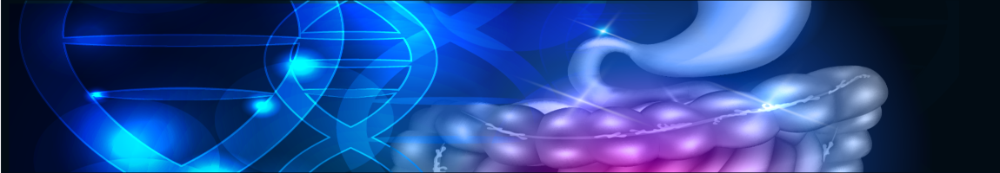

Original Blackboard item · _7758152_1

Hi All,
Module 1 explores most of the important basics of Pharmacology to give you a solid foundation for your understanding of medications in the future. Normally, the foundational information in pharmacology is the most difficult (and sometimes boring) material.
But in this module, we use the medications of the gastrointestinal system/tract (GIT) to explore these difficult topics, making it actually fun. We start out with the easiest of medications - those that cannot get absorbed and work by chemical action or by direct action. (Normally, our medications work on cellular receptors or affect enzymes, but the first topic/chapter introduces you very slowly.) Next, Topic/Chapter 2, we explore cellular receptors, looking at what they are, what they do and how our drugs can affect them. This is where we get into the topic of pharmacodynamics. The third topic/chapter starts introducing you to pharmacokinetics, the movement of drugs through the system, involving absorption, distribution, metabolism and excretion. We look at enzymes and how we can affect them with our medications in Topic/chapter 4. Finally, in Topic/chapter 5, we look at neurotransmitters and the most difficult concepts in the GIT, which have to do with our antiemetics.
If you want to love pharmacology the way I do, please pay close attention to this first module. I teamed up with a partner in this module to make sure that you can actually picture the processes that will form the basis of your understanding of pharmacology. Unfortunately, while all of the videos in this unit are of relatively high quality, this module will have a significantly higher level of annimation than subsequent modules, but by then you will have developed the ability of picturing how our medications work !
Enjoy! Regards,
Ken
By the end of this module you will be able to:
This entire module contains a total of 4 hours of video lessons plus activities that reinforce your knowledge and prepare you for the quiz. The average of all 6 modules is 2 hours of video lessons per module, so this is significantly bigger than any other module. While the online material is much bigger this week than other weeks, we do not have any tutorial questions or questions in the Case Study this week, so your work this week is in the modules.